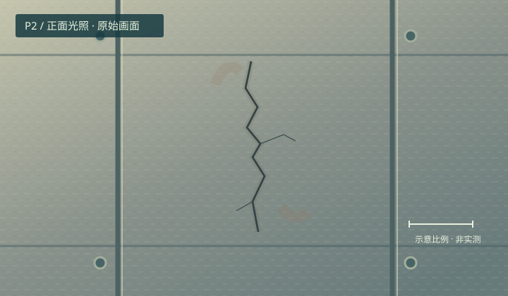

一次巡检 · 四种解决问题的方法
船回来了，这份巡检报告能交吗？
先预测，再操作、解释和迁移。沿着同一次巡检，练习四种解决问题的方法。
INSPECTION WATER / 教学港区
从基地到证据
每一个巡检点都会生成图像与设备记录。航行结束后，仍需检查报告依据。
TRACE / 第二讲 · 教学追踪
一条一条读，什么时候加 1？
网页展示程序的执行步骤；实际 Python 请在 PAI-DSW 运行。
高亮是教学追踪（不是浏览器中的 Python 解释器）。输入或规则改变后，从头追踪。
DATA / 数据来源与统计规则
边界上的 80，算不算？
标准样例：同一推进电机 M1，在三个时刻的记录。统计次数不是故障设备数量。规则同时用于报告，样例选择不会改写航次记录。
RECORDS / 同一设备 M1 · 采集时刻
船上有记录，岸站有收到吗？
| 巡检点 | 采集时间 | 温度 °C | 交回状态 |
|---|
记录在巡检点生成；断网期间的记录留在船上。缺测值不进入温度统计。
EVENTS / 因果时间线
EVIDENCE / P2 设施表面
一条暗线，就能认定为裂纹吗？

虚拟设施 · 教学构造图像预设 AI 判断 · 教学示例
“该区域可能存在裂纹，建议进一步复核。”
这是预设候选判断，没有运行真实模型，也不代表检测性能。
补拍仍缺少内部结构证据。报告可以交付“待复检”结论；不能把候选判断写成已证实事实。
MISSION REPORT / 基于当前航次生成
巡检报告草稿
报告全文 · 包含学习成果，可复制
只保存在当前页面，刷新即清空；复盘随下载报告导出。迁移思考：无人机失联或机械设备网关断开时，哪些能力仍在本地？
把模型看清楚，再解释结果
这是用于比较因果的教学模型。地图坐标单位为米（m），模拟时间为秒（s），电量与能耗为瓦时（Wh）。不模拟风浪、水动力或真实避障，不承诺最优路线。
航速 4 m/s；行进耗能 0.10 Wh/m；船载设备开机耗能 0.05 Wh/s，停机后保留电路耗能 0.01 Wh/s；每个巡检点瞬时采集耗能 1 Wh。基准电量 60 Wh，返航保留量 6 Wh。预计余量按所选路线剩余距离、开机时间和剩余采集次数计算；中途等待会增加耗能。碰到禁区边界即判违规。
每个点记录推进电机 M1 的温度与设施图像。三个点按教学脚本分别提供 65、80、81 °C；温度缺测开关会生成空值，不伪造读数。每教学秒最多交回一条记录，顺序补传、去重；返航后可继续补传，此时假设岸站供电。船载停机保留已有非易失存储。
暂停冻结任务时间、记录和传输；旋转或结构展开只改变观察方式。重跑保留路线、电量及故障配置；恢复基准恢复合规路线、60 Wh、本地执行、联网与上电、有效传感器、标准统计规则，并清空航次和复盘。
第 1 讲：完成航行、断网实验、图像复核和报告。第 2 讲：载入标准数据，先手算，再逐句追踪，最后在 PAI-DSW 运行下载的 Python 文件。课程 AI 学习助教可提供提示和复盘；本站无需账号，没有远程执行或大模型 API。
启动方法、验证记录与可编辑文件随源代码交付。交互设计参考 532 LAB。模型与素材均为本实验独立编写。